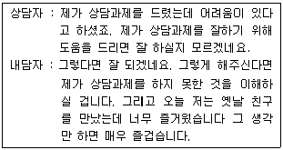
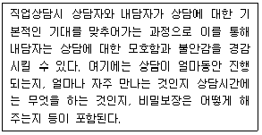
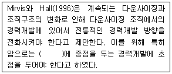
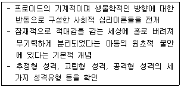
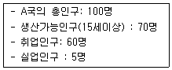
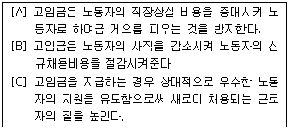
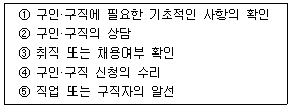

직업상담사-2급(구) (2005-08-07 기출문제)
1과목: 직업상담ㆍ심리학
1. 지금-여기에 상황과 감정을 강조하는 상담이론은？
- 게슈탈트 상담
- 정신 역동 상담
- 교류분석 상담
- 행동적 상담
(정답률: 알수없음)

2. 다음 진술문에 맞는 상담기법은?

- 역설적 사고
- 논리적 분석
- 지시적 상상
- 저항감에 다시 초점 맞추기
(정답률: 알수없음)
3. 다음은 직업상담 과정 중 무엇에 대한 상담인가?

- 상담의 명료화
- 상담의 구체화
- 상담의 안정화
- 상담의 구조화
(정답률: 알수없음)
4. 집단 직업상담에 관한 설명으로 옳지 않은 것은?
- 집단 내 다른 사람으로부터 피드백을 받으면서 자신의 문제에 대한 통찰력을 얻는다
- 직업성숙도가 낮은 사람들에게 적합하다
- 자신의 문제에 대해 보다 심층적인 접근과 해결이 가능하다
- 비현실적으로 높은 직업목표를 가지고 있는 사람들에게 효과가 있다.
(정답률: 알수없음)
5. Butcher가 말한 집단 직업상담의 3단계를 순서대로 연결한 것은?
- 탐색-행동-유지
- 탐색- 전환-행동
- 유지-전환-행동
- 전환 - 탐색- 유지
(정답률: 알수없음)
6. 직업상담의 목표로 적절하지 않은 것은?
- 예언과 발달
- 진로발달이나 직업문제에 대한 처치
- 경험보다 유능성에 초점을 맞추는 것
- 직업을 골라주는 것
(정답률: 알수없음)
7. 다음 중 직업상담사의 직무내용과 가장 거리가 먼 것은?
- 직업문제에 대한 심리치료
- 직업관련 임금평가
- 직업상담 프로그램의 개발과 운영
- 구인, 직업상담, 직업적응, 직업전환, 은퇴 후 등의 직업상담
(정답률: 알수없음)
8. 국가 ·사회적인 측면에서 본 진로지도의 필요성이 아닌 것은?
- 과열과외 및 재수생 누적에 대한 문제해결방안
- 적재적소에 맞는 인재양성
- 사회적 신분상승을 위한 수단
- 직무수행에 있어서 생산성과 적응력의 고양
(정답률: 알수없음)
9. 실업 충격을 완화시키기 위한 프로그램이 아닌 것은?
- 실업스트레스 대처 프로그램
- 취업동기 증진 프로그램
- 진로개발 프로그램
- 구직활동 증진 프로그램
(정답률: 알수없음)
10. 대학생의 진로상담에서 진로개발을 위해 강조하기 않아도 되는 것은?
- 여가시간 활용
- 자신의 능력파악
- 직무스트레스
- 대인관계형성
(정답률: 알수없음)
11. 다음 중 직업상담 영역이 아닌 것은?
- 직업일반상담
- 직업건강상담
- 취업상담
- 실존문제상담
(정답률: 알수없음)
12. 다음 Super의 발달적 직업상담 단계를 올바르게 배열한 것은?
- 문제탐색-태도와 감정의 탐색과 처리-심층적 탐색-현실검증-자아수용-의사결정
- 문제탐색-심층적 탐색-태도와 감정의 탐색과 처리-현실검증-자아수용-의사결정
- 문제탐색-심층적 탐색-자아수용-현실검증-태도와 감정의 탐색과 처리-의사결정
- 문제탐색-심층적 탐색-현실검증-자아수용-태도와 감정의 탐색과 처리-의사결정
(정답률: 알수없음)
13. Rogers의 내담자 중심 접근의 인간 행동에 대한 기본관점을 가장 잘 표현한 것은?
- 인간의 행동에 대한 정신적 결정론
- 선천적인 잠재력 및 자기실현 경향성
- 개인의 다양한 학습경험의 축적
- 무의식적 동기에 의해 결정
(정답률: 알수없음)
14. 다음 ( )에 적합한 것은?

- 수평이동
- 동기유발
- 적성파악
- 개인성격
(정답률: 알수없음)
15. 직상담의 과정에는 진단, 문제분류, 문제구체화, 문제해결의 단계가 있고 보았고, 직업상담의 목적에는 진로선택, 의사결정 기술의 습득, 일반적 적응의 고양 등이 포함된다고 한 사람은?
- 크라이티스(Crites)
- 크룸볼츠(Krumboltz)
- 슈퍼(Super)
- 기즈버스(Gysbers)
(정답률: 알수없음)
16. 비자발적 실업자의 경우 실업이라는 사건을 통해 비합리적 신념체계를 형성하게 되고 결과적으로 우울증 같은 증세를 나타나게 된다. 다음 중 실업자의 바합리적 신념 체계에 대해 논박과 자신이 무가치한 존재가 아니라는 것을 일께워주고 자신에 대한 긍정적인 태도와 강점을 잦게 만드는 상담 기법은?
- 합리적-정서적 상담(RET)
- 특성요인 상담
- 정신역동적 직업상담
- 내담자 중심적 직업상담
(정답률: 알수없음)
17. 직업상담자의 역할을 잘못 설명한 것은?
- 치료자 및 조언자의 역할
- 자료제공자의 역할
- 내담자의 보호자 역할
- 기관/단체들과 협의자 및 직업심리검사자의 해석자
(정답률: 알수없음)
18. 마이러스-브리그스의 유형 지표에 대한 설명으로 옮지 않은 것은?
- 자기보고식의 강제선택 검사이다
- 판단형과 지각형의 성격 차원은 지각적 또는 정보 수집적 과정과 관계가 있다.
- 외향형과 내향형의 성격 차원은 세상에 대한 일반적인 태도와 관계가 있다.
- 내담자가 선호하는 직업역할, 기능, 환경을 찾아내는데 유용하다
(정답률: 알수없음)
19. 초기 면담의 주요 요소 중 내담자로 하여금 행동의 특정 측면을 검토해보고 수정하게 하며 통제하도록 도전하게 하는 것은?
- 계약
- 감정이입
- 리허설
- 직면
(정답률: 알수없음)
20. 다음 특성-요인 이론 관련된 내용으로 옳지 않은 것은?
- '직업과 사람을 연결시키기'라는 심리학적 관심을 대표한다.
- 직업선택 과정이 개인의 아동기부터 초기 성인기까지의 사회-문화적 환경에 따라 주관적으로 발달된다고 본다．
- 특성 요인 직업상담에 있어서 상담자의 역할은 교육자의 역할이다.
- 미네소타대학의 직업심리학자들이 이 이론에 근거한 각종 심리검사를 제작하였다.
(정답률: 알수없음)
21. 직무와 관련된 스트레스요인 중 기계화 및 자동화시대에 살고 있는 오늘날 가장 위험한 스트레스 요인이 될 수 있는 것은?
- 지루함
- 역할갈등
- 생산압력
- 개인주의
(정답률: 알수없음)
22. 한국판 웩슬러 성인 지능검사의 특징이 아닌 것은?
- 언어성 검사와 동작성 검사로 이루어져있다.
- 반응양식이나 검사행동약식으로 개인의 독특한 심리 특성도 파악할 수 있다.
- 신뢰도와 타당도가 높다.
- 숫자외우기, 추리력, 어휘문제 등의 소검사가 포함되어 있다.
(정답률: 알수없음)
23. 작업동기에 관한 설명으로 틀린 것은?
- 목표설정이론에 따르면, 어려운 목표는 쉬운 목표보다 더 놓은 수행성과를 가져온다.
- 내재적 동기이론에 의하면 외적보상은 내재적 동기를 저해한다.
- 기대이론에서 첫 번째 수준의 성과와 두 번째 수준의 성과가 서로 연결될 확률을 기대하고 한다．
- Alderfer는 Maslow의 이론을 수정하여 ERG이론을 제안하였다.
(정답률: 알수없음)
24. 분석할 대상 직업에 대한 자료가 드물고, 그 분야에 많은 경험과 지식을 갖춘 사람이 거의 없을 때 사용하는 직무분석 기법은?
- 비교확인법
- 최초분석법
- 데이컴법
- 현장확인법
(정답률: 알수없음)
25. 타당도에 대한 설명 중 틀린 것은?
- 타당도란 측정하고자 하는 바를 얼마나 정확하게 측정하고 있는가를 의미한다.
- 내용타당도는 내용영역을 얼마나 정확하고 자세하게 기술하는 가에 달려있다.
- 구성타당도가 높으려면 수렴타당도는 높아야 하지만, 변별 타당도는 낮아야 한다.
- 준거관련타당도는 현재에 초점을 맞춘 동시타당도와 미래에 초점을 맞춘 예언타당도로 구분할 수 있다.
(정답률: 알수없음)
26. 직업선택에 대한 로(Roe)의 이론 중 잘못 설명한 것은?
- 직업선택에서 개인의 욕구를 중요시하였다.
- 직업선택에서 초기아동기 경험을 중시하였다.
- 환상기, 잠정기, 현실기라는 진로발달의 3단계를 제시하였다.
- 직업을 여덟 개의 군집으로 나누고 각 군집에 해당하는 직업들의 목록을 작성했다.
(정답률: 알수없음)
27. 서로 바르게 연결된 것은?
- 정신적요건(mental requirements)-표현력
- 숙련적 요건(skill requirements)-교양과 지성
- 신체적 요건(physical requirements)-조명, 환기, 위험도
- 작업적 요건(job ebvironments)-기계조작시의 근육운동, 종합화능력
(정답률: 알수없음)
28. 직업의 탐색과 선택, 유지 및 은퇴를 연령에 따라 연구할 때, 일정한 수의 사람들을 연령의 증가에 따라 계속 관찰하고 그 결과를 연령의 함수로 나타내는 연구방법은?
- 수직적 연구
- 수평적 연구
- 종단적 연구
- 횡단적 연구
(정답률: 알수없음)
29. 직무분석 윤리에 대한 설명으로 틀린 것은?
- 직무분석은 문서화된 형태로 남겨져야한다
- 직무분석은 사용된 절차에 대하여 상세히 기술하여야한다
- 표본의 크기는 커야하며, 그 직무를 잘 나타낼 수 있어야 한다.
- 초보적인 직무수행의 요구조건에 대해서는 반드시 명실 필요가 없다.
(정답률: 알수없음)
30. 직무분석 절차 중 작업자 지향적 절차는 직무를 성공적으로 수행하는데 요구되는 인적 속성들을 조사함으로써 직무를 이해하려고 한다. 다음 중 인적속성에 해당하지 않는 것은?
- 태도
- 지식
- 기술
- 능력
(정답률: 알수없음)
31. 다음 중 직무 명세서에 포함되는 것은?
- 직무직종
- 직무내용
- 직무조건
- 작업경험
(정답률: 알수없음)
32. 다음은 누구의 이론을 설명한 것인가?

- 에릭 프롬(Erich Fromn)
- 칼 융(Carl Jung)
- 카렌 호니(Karen Horney)
- 아플렛 아들러(Alfed Adler)
(정답률: 알수없음)
33. 직장상사에게 야단맞은 사람이 부하직원이나 식구들에게 트집을 잡아 화풀이를 하는 것은 스트레스에 대한 방어적 대처 중 어떤 개념과 가장 일치하는가?
- 합리화(Rationalization)
- 동일시(Identification)
- 보상(Compensation)
- 전위(Displacement)
(정답률: 알수없음)
34. 다음 중 질문지법의 장점이 아닌 것은?
- 부수적인 정보를 얻을 수 있다.
- 시간과 비용이 적게 든다.
- 다수의 종업원이 참여할 수 있다.
- 자료수집이 용이하다
(정답률: 알수없음)
35. 긴즈버그(Ginzberg)의 직업발달 단계 중 자신의 결정을 구체화시키고 바다 세밀한 계획을 세우며 고도로 세분화· 전문화된 의사결정을 하게 되는 단계는?
- 전환단계
- 탐색단계
- 결정단계
- 특수화단계
(정답률: 알수없음)
36. 다음 중 원점수를 표준점수로 변환했을 때 이들 표준점수(Z-score) 들의 평규과 표준편차가 맞는 것은?
- 평균=0, 표준편차=1
- 평균=1, 표준편차=1
- 평균=100, 표준편차=15
- 평균=1, 표준편차=15
(정답률: 알수없음)
37. 다음 중 Holland(1992)의 흥미유형에 해당되지 않는 것은?
- 현실형
- 탐구형
- 진취형
- 개방형
(정답률: 알수없음)
38. 직업선택과 관련된 요인인 흥미, 적성, 가치관에 대한 설명으로 틀린 것은?
- 가치는 개인의 동기의 원천이며, 한 개인의 판단기준의 근거이다.
- 적성은 특정 분야에서의 능력 발휘 가능성을 나타낸다.
- 흥미나 가치는 경험에 의하여 영향을 받으나 적성은 경험과 무관하게 타고 난 것이다.
- 가치와 흥미는 서로 밀접한 관련이 있으면서도 구분되는 개념이다.
(정답률: 알수없음)
39. 주관식 채점 시 수험생의 이름을 가리고 채점하여 공정성을 확보하는 것은 어떤 심리적 효과를 배제하기 위해서인가?
- 후광효과
- 초두효과
- 방사효과
- 반발효과
(정답률: 알수없음)
40. 판매에 따라 수수료를 받는 부동산 영업사원은 강화계획 중 무엇의 예에 해당하는가?
- 고정간격
- 고정비율
- 변동간격
- 변동비율
(정답률: 알수없음)
2과목: 직업정보론(노동시장론 포함)
41. 직업정보 가공 시 유의사항이 아닌 것은?
- 직업은 그 분야에서 매우 전문적이므로 전문적인 지식이 없어도 이해할 수 있는 언어로 가공 한다.
- 직업에 대한 장·단점을 편견 없이 제공한다.
- 현황은 가장 최신의 자료를 활용하되, 표준화된 정보를 활용한다.
- 시청각 효과를 부여하면 혼란이 발생되기 때문에 가급적 삼간다.
(정답률: 알수없음)
42. 워크넷에서 제공되는 통계간행물이 아닌 것은?
- 구인구직취업동향
- 고용동향분석
- 고용보험통계
- 매월노동통계
(정답률: 알수없음)
43. 2003년 3월 개정된 한국표준산업분류의 특징으로 옮은 것은?
- 반도체 관련 산업(액정표시장치, 전자카드제조업)울 새롭게 신설하였다.
- 통신업, 사업서비스업, 오락 및 운동관련 서비스업을 중분류로 하향 조정하였다.
- 서비스 산업의 전문화를 위해 디자인 산업, 사무관련 서비스업, 건축기술 및 엔지니어링 서비스 산업을 통합하였다.
- 기계장비, 자도차 및 소비용품 수리업 등을 통합하여 서비스산업부문에서 93 기타 서비스업의 중분류로 신설하였다.
(정답률: 알수없음)
44. 구직자 상담을 위한 직업상담사의 기본적인 자세가 아닌 것은?
- 틀에 박힌 면접은 피해야 한다.
- 비판적인 상담태도를 나타내지 않도록 노력해야한다.
- 입수한 개인정보는 상담기록에 남기기 말고 또한 어느 누구에게도 말하지 않도록 노력한다.
- 전문적인 용어는 될 수 있는 한 사용하지 않도록 해야 한다.
(정답률: 알수없음)
45. 2000년도에 개정된 한국표준직업분류의 대분류별 개정 내용에 대한 설명으로 옮은 것은?
- 입법공무원의 명칭을 의회의원으로 변경하였으며 장관은 고위공무원으로 분류 하였다.
- 라디오 아나운서, 디자이너, 영양사 등은 전문가에서 준 전문가로 이동하였다.
- 사무직원과 사무보조직원을 통합하였다
- 판매종사자의 비중을 감소하여 도소매 판매종사자의 분류체제를 축소하였다.
(정답률: 알수없음)
46. 만약 어느 상점에 배달원 3명, 판매원 2명, 회계원 1명이 일하고 있을 때 직무분석 결과로 옮은 것은?
- 임무(duty)는 모두 3개이다
- 작업(task)은 모두 3개이다.
- 직무(job)는 모두 3개이다.
- 직위(position)는 모두 3개이다.
(정답률: 알수없음)
47. 한국표준표준직업분류에서 정의하는 직업의 범주에 속하는 활동은?
- 레스토랑에서 아르바이트
- 경마 등에 의한 배달
- 자기 집에서의 가사활동
- 연금이나 사회보장에 따른 수입
(정답률: 알수없음)
48. 다음 중 노동시장정보에 대한 설명으로 옮지 않은 것은?
- 노동시장정보를 수직·정리하고 분석·가공한 결과를 수요자에게 제고하는 일련의 과정 또는 체계이다.
- 직업선택의 효율성을 증대시키고 합리적인 인적자원관리를 통해 불필요한 이직을 최소화 한다
- 직업, 산업, 임금, 근로시간, 노동시장 동향, 노동력의 인구학적 특성뿐만 아니라 구인·구직·직업훈련노동 관련제도 및 정책에 관한 정보를 포함한다.
- 우리나라의 경우 노동시장정보자료의 수집·분석·가공은 통계청에서 주로 담당하고 있다.
(정답률: 알수없음)
49. 고용보험 미적용 실직자 중 주로 생활보호대상자, 영세농어민 등 저소득 계층을 대상으로 자활기반 확충 및 소득향상 도모를 위해 실시하는 직업훈련은?
- 실업자재취직훈련
- 고용촉진훈련
- 취업훈련
- 우선직종훈련
(정답률: 알수없음)
50. 2010년까지 취업자 구성비의 추이를 전망할 때, 취업자 구성비가 현재보다 증가할 것으로 예상되는 직업 대분류는?
- 농림어업근로자
- 기술공 및 준전문가
- 장치, 기계조작원 및 조립원
- 단순노무직
(정답률: 알수없음)
51. 한국직업사전(2003년)의 부가직업정보 중 작업강도에 관한 설명으로 옮은 것은?
- 작업강도는 해당 직업의 직무를 수행하는데 필요한 육체적 힘의 강도를 나타낸 것으로 3단계로 분류하였다.
- 작업강도는 심리적·정신적 노동강도는 고려하지 않았다.
- 보통작업은 최고 40kg 의 물건을 들어올리고 20kg 정도의 물건을 빈번히 들어 올리거나 운반한다.
- 운반이란 물체를 주어진 높이에서 다른 높이로 올리거나 내리는 작업을 의미한다
(정답률: 알수없음)
52. 다음 중 직업안정기관에서 담당하는 업무로서 그 성격이 다른 것은?
- 고용조정이 불가피한 사업에 대한 고용유지지원
- 실업자, 구직자 고용촉진을 위한 직업훈련사업
- 여성, 고령자 등의 고용확대지원사업
- 장애인 고용촉진지원사업
(정답률: 알수없음)
53. 훈련대상자가 당해연도 취업훈련예산의 범위를 초과할 경우 지방노동관서의 장이 가장 우선적으로 선발해야하는 대상은?
- 전직실직자로서 실직시간이 3개월 이상인 자
- 장애인
- 신규미취업자로서 3개월이 경과한 자
- 전직 실직자
(정답률: 알수없음)
54. 한국표준직업분류에서 『웹서버 구축 및 홈헤이지 운영, 관리 등 인터넷 또는 PC 통신과 관련된 정보서비스 등의 각종 서비스를 개발하고 관련 정보를제공하며, 이를 운영하고 관리하는 자』가 아닌 것은?
- 웹마스터
- 인터넷전문가
- 웹디자이너
- 컴퓨터네트워크 운영전문가
(정답률: 알수없음)
55. 직업선택 결정모형은 기술적 직업결정모형과 처방적 직업결정모형으로 분류할 수 있다. 이중 기술적 직업결정모형에 해당하지 않는 것은?
- 타이드만과 오하라의 모형
- 힐튼의 모형
- 카츠의 모형
- 브룸의 모형
(정답률: 알수없음)
56. 직무분석 방법중 데이컴법(DACUM method)에 관한 설명으로 옮지 않는 것은?
- 교과과정을 개발하기 위해 주로 사용되는 기법이다.
- 해당 직업전문가가 직무의 전반에 대하여 잘 알고 있음을 전제로 한다.
- 데이컴 위원회는 8-12명의 전문가로 구성된다．
- 테이컴 분석가는 서기나 옵저버의 의견도 잘 반영하여야 한다.
(정답률: 알수없음)
57. 국가기술자격종목 중 신설되어 20⑤년도에 처음 시행되는 자격종목이 아닌 것은?
- 설비보전기사
- 인간공학기사
- 스포츠 경영관리사
- 광해방지기사
(정답률: 알수없음)
58. 다음 중 2차 노동시장의 특징에 해당되는 것은?
- 놓은 임금
- 높은 안정성
- 높은 이직률
- 높은 승진률
(정답률: 알수없음)
59. 일정기간 동안 구인신청이 들어온 모집인원 중 해당 월말 현재 알선 가능한 인원수의 합을 무엇이라고 하는가?
- 구인인원
- 유효구인인원
- 신규구인인원
- 유효구인배율
(정답률: 알수없음)
60. 중앙고용정보원에서 발행한 구인·구직 및 위업동향에 수록된 용어해설에 관한 설멍으로 맞는 것은?
- 구인배수: 신규구인인원 / 신규구직자수
- 일자리경쟁배수 : 신규구인인원 / 신규구직자수
- 취업률 : (신규구직자수 / 취업건수) X 100
- 충족률 : (신규구인인원 / 취업건수) X 100
(정답률: 알수없음)
61. 노동조합의 유형에 관한 설명 중 틀린 것은?
- 노조의 목적함수는 임금을 포함한 근로조건의개선과 고용안정이라는 것이 일반적인 통설이다.
- 노조는 서로 상이한 선호를 지니고 있는 다양한 이해 관계집단이라고 볼 수 있다.
- 민주형 노조의 의사결정의 대표적인 예는 중위수 투표(median vote)원리이다
- 일반적으로 민주형 노조보다는 독재형 노조의 경우에서 임금 및 근로조건의 실질적인 개선이 더 큰 것으로 나타나고 있다.
(정답률: 알수없음)
62. 통상임금에 대한 설명으로 옮지 않는 것은?
- 근로자에게 정기적, 일률적으로 지급해야 한다.
- 근로의 대가로서 지급해야한다
- 시간외수당의 산정기준으로 활용 된다
- 각종 재해보상금의 산정기준이 된다
(정답률: 알수없음)
63. 다음 중 경쟁노동시장모형의 가정으로 틀린 것은?
- 노동자 개인마다 개별고용주는 시장임금에 아무런 영향력을 행사할 수 없다.
- 노동자의 단결조직과 사용자의 단결조직은 없다.
- 모든 직무의 공석(公席)은 내부노동시작을 통해서 채워진다.
- 노동자와 고용주는 완전정보를 갖는다.
(정답률: 알수없음)
64. 고임금의 경제효과가 있을 때 새롭게 형성되는 노동수요곡선은 원래의 수요곡선보다 어떻게 되는가?
- 비탄력적이다,
- 탄력적이다
- 단위탄력적이다
- 무관하다
(정답률: 알수없음)
65. 노조가 임금인상 투쟁을 벌일 때 고용량 감소효과가 가장 적게 나타나는 경우는?
- 노동수요의 임금탄력성이 0.1 일 때
- 노동수요의 임금탄력성이 1 일 때
- 노동수요의 임금탄력성이 2 일 때
- 노동수요의 임금탄력성이 5 일 때
(정답률: 알수없음)
66. 다음 중 개인이 노동시장에서 노동공급을 포기하는 경우 이에 대한 설명으로 틀린 것은?
- 개인의 여가-소득간의 무차별 곡선이 수평에 가까운 경우이다
- 개인의 여가-소득간의 무차별 곡선과 예산제약선간의 접점이 존재하지 않거나 코너(corner)점에서만 접점이 이루어 질 경우이다.
- 일정수준의 요용을 유지하기 위해 1시간 추가적으로 더 일하는 것을 보상하기 위해 요구되는 소득이 시장 임금률 보다 더 큰 경우이다
- 소득(소비)에 비해 여가의 효용이 매우 큰 경우이다
(정답률: 알수없음)
67. 경제활동인구조사에서 비경제활동인구로 분류되는 것은?
- 가족단위사업체의 무급가족종사자
- 일시적인 병 등으로 인한 일시휴직자
- 직장이 없는 실업자
- 가사노동을 하는 가정주부
(정답률: 알수없음)
68. 다음 자료를 바탕으로 A 국의 실업률의 계산공식으로 맞는 것은?

- 5/100 X 100
- 5/70 X 100
- 5/60 X 100
- 5/65 X 100
(정답률: 알수없음)
69. 다음 중 노동수요의 탄력성을 결정하는 요인이 아닌 것은?
- 다른 요소와의 대체가능성
- 총생산비에 대한 노동비용의 비중
- 다른 생산요소의 수요의 가격탄력성
- 상품에 대한 수요의 탄력성
(정답률: 알수없음)
70. 일부 기업이 노동자의 생산성을 초과하는 임금을 지급하는 이유에 대한 설명을 바르게 묶어 놓은 것은?

- A, B
- A, C
- B, C
- A, B, C
(정답률: 알수없음)
71. 노동수요 탄력성에 관한 힉스- 마샬 의 법칙으로 설명이 틀린 것은?
- 노동에 대한 수요탄력성은 여타 생산요소의 공급탄력성이 작을수록 커진다．
- 노동에 대한 수요 탄력성은 노동비용이 총생산비에서 차지하는 비중이 클수록 크다
- 다른 생산요소와의 대체가능성이 높으면 높을수록 노동에 대한 탄력성은 크게 된다．
- 최종생산물에 대한 수요가 탄력적일수록, 노동에 대한 수요 또는 탄력적이 된다．
(정답률: 알수없음)
72. 퇴직금, 사회보장비, 복리후생비 등 노동시간과 직접적인 관계없이 지불되는 비용을 준고정비용 이라고 한다． 준고정비용이 증가하면 기업의 고용, 근로시간은 어떻게 변할까?
- 고용은 증가하고 1인당 근로시간은 감소할 것이다
- 고용은 감소하고 1인당 근로시간은 증가할 것이다
- 고용과 1인당 근로시간 모두 증가할 것이다
- 고용과 1인당 근로시간 모두 감소할 것이다
(정답률: 알수없음)
73. 효율임금(efficiengy wage) 가설이란?
- 기업이 생산의 효율성을 달성하기 위해 적정임금을 책정한다는 것이다
- 기업이 시장임금보다 높은 임금을 유지해 노동생산성 증가를 도모한다는 것
- 기업이 노동생산성에 맞춰 임금을 책정한다는 것
- 기업이 생산비 최소화 원리에 따라 임금을 책정한다는 것
(정답률: 알수없음)
74. 다음 중 적극적 노동시장정책이 아닌 것은?
- 실업보험
- 직업계속 및 전환교육
- 고용보조
- 장애자 대책
(정답률: 알수없음)
75. 일반적으로 노동시장이 경쟁적으로 작동하면 근로자의 한계생산물과 임금이 일치한다. 다음 중 임금이 한계생산물과일치하지 않은 가능성이 가장 큰 경우는?
- 건설현장의 미숙련 근로자
- 갯수제 임금이 시행되는 제조업 근로자
- 여성의 최소 채용비율이 정해져 있는 공무원
- 사설 직업훈련기관에서 훈련을 받은 자동차산업의 근로자
(정답률: 알수없음)
76. 최근 중요한 고용관행으로 자리잡아가고 있는 성과급제도의 장점으로 적절한 것은?
- 직원 간 화합이 용이하다
- 근로의 능률을 자극할 수 있다.
- 임금의 계산이 간편하다
- 확정적 임금이 보장 된다.
(정답률: 알수없음)
77. 임금체계 중 연령, 근속, 학력, 남녀별 등의 요소에 따라 임금을 결정하는 임금체계는?
- 연공금 임금체계
- 직무급 임금체계
- 직능금 임금체계
- 성과급 임금체계
(정답률: 알수없음)
78. 노조의 단체교섭 결과가 비조합원에게도 혜택이 돌아가는 현실에서 노동조합의 조합원이 아닌 비조합원에게도 단체 교섭의 당사자인 노동조합이 회비를 징수하는 숍(shop)제도는?
- 유니언숍
- 에이전시숍
- 클로즈드숍
- 오픈숍
(정답률: 알수없음)
79. 노동공급과 관련한 소득-여가 선호모형에 대한 설명으로 틀린 것은?
- 경제활동참가여부는 시장임금율의 변화에 영향을 받는다.
- 어느 가구원의 노동공급 결정여부는 비근로소득 또는 타가구원의 소득에 영향을 받는다．
- 소득-여가 선호모형에서 요구임금율이 시장임금융보다 높은 경우에 경제활동에 참가 한다．
- 소득-여가 무차별곡선상의 한 점에 접하는 접선의 기울기는 요구임금율을 의미 한다．
(정답률: 알수없음)
80. 다음 중 직업탐색이론과 가장 관련이 없는 것은?
- 요구임금
- 기회비용
- 불완전한 노동시장정보
- 구조적 실업
(정답률: 알수없음)
3과목: 노동관계법규
81. 현행 근로기준법상의 근로시간제도가 아닌 것은?
- 2주이내의 탄력적 근로시간제
- 6개월 이내의 탄력적 근로시간제
- 선택적 근로시간제
- 사업장 밖 근로에 대한 간주(인정)근로시간제
(정답률: 알수없음)
82. 직업안정법상 유료직업소개사업을 하는 자에게 금지되는 행위가 아닌 것은?
- 구인자에게 소정의 소개비를 받는 행위
- 명의를 타인에게 대여하는 행위
- 구직자에게 제공하기 위하여 구인자로부터 선불금을 받는 행위
- 18세 미만자를 청소년유해업소에 소개하는 행위
(정답률: 알수없음)
83. 고령자에 대한 취업지원유형에 해당하지 않는 것은?
- 직업재활
- 직업지도
- 취업알선
- 직업능력개발훈련
(정답률: 알수없음)
84. 근로기준법상 해고의 법리에 대한 다음 설명 중 옮지 않는 것은?
- 근로자의 취업 기회와 고용안정을 도보하기 위하여 일반적으로 정당한 이유 없이는 해고를 금지하고 있다.
- 근로계약은 그 본질에 있어서 사적자치의 실현을 위한 것으로 위반할 경우 민사상의 청구권과 손해배상청구권이 방생할 뿐 별도의 형사책임은 문제되지 않는다．
- 사용자는 업무상 질병의 요양을 위한 휴업기간과 그 후 30일간은 근로자를 해고 할 수 없다
- 경영악화를 방지하기 위한 사업의 양도·인수·합병은 긴박한 경영상의 필요가 있는 것으로 본다．
(정답률: 알수없음)
85. 직업안정법의 용어 정의에 대한 설명이다 틀린 것은?
- 직업소개라 함은 구인 또는 구직의 신청을 받아 구인자와 구직자 간에 고용계약의 성립을 알선하는 것을 말한다．
- 직업안정기관이라 함은 직업소개·직업지도 등 직업안정업무를 수행하는 지방노동행정기관을 말한다.
- 근로자모집이라 함은 근로자를 고용하고자 하는 자가 취직하고자 하는 자에게 피용자가 되도록 권유하거나 다른 사람으로 하여금 권유하게 하는 것을 말한다．
- 근로자 공급사업이라 함은 공급계약에 의하여 근로자를 타인에게 사용하게 하는 사업을 말하는 것으로서, 파견근로자보호등에 관한 법률에 의한 근로자파견사업도 포함한다．
(정답률: 알수없음)
86. 직업안정법상 직업안정기관의 장이 따라야 할 직업소개의 절차를 순서대로 나열한 것은?

- ①④②⑤③
- ①④⑤②③
- ④①②⑤③
- ④①⑤②③
(정답률: 알수없음)
87. 고용보험법상의 심사 및 재심사 청구의 대상에 해당하는 것은?
- 피보험자격의 취득·상실의 확인에 대한 처분
- 보험료 징수에 대한 처분
- 고용안정사업에 관한 처분
- 직업능력개발사업에 관한 처분
(정답률: 알수없음)
88. 근로기준법상 미성년자의 근로계약에 관한 설명 중 맞는 것은?
- 법정대리인은 본인의 동의를 얻어 미성년자의 근로계약을 대리할 수 있다.
- 법정대리인은 미성년자의 근로계약을 대리 할 수 없다.
- 미성년자의 위임에 의한 임의대리인은 미성년자의 근로계약을 대리할 수 있다.
- 법정대리인은 제한 없이 미성년자의 근로계약을 대리 할 수 있다.
(정답률: 알수없음)
89. 근로기준법이 규정하는 임금의 개념에 포함되는 것은?
- 호텔의 종업원이 손님으로부터 개인적으로 받는 팁
- 부친상을 당한 근로자에게 사용자가 지급하는 조위금
- 손님접대를 하는 개인에게 지급되는 교제비
- 매월 일정한 액수 전 직원에게 지급되는 점심식대
(정답률: 알수없음)
90. 다음 중 남녀고용평등법상 규정된 내용이 아닌 것은?
- 직장 내 성희롱금지 및 예방교육
- 임금에서 동일가치노동의 동일임금보장
- 산전후 휴가에 대한 지원
- 생리휴가
(정답률: 알수없음)
91. 지업능력개발훈련을 실시하기 위하여 설치한 훈련전용시설을 이용하거나 기타 산업체의 생산시설 및 근무 장소를 제외한 적합한 훈련시설에서 실시하는 직업능력개발훈련은?
- 향상훈련
- 전직훈련
- 집체훈련
- 통신훈련
(정답률: 알수없음)
92. 다음 중 고용보험법상 근로자에 대한 지원에 해당하는 것은?
- 고용유지지원금
- 직업능력개발수당
- 직업능력개발훈련시설·장비설치비용 대부
- 여성고용촉진장려금
(정답률: 알수없음)
93. 근로3권에 관한 설명으로 타당한 것은?
- 단결권, 단체교섭권, 단체행동권은 일체를 이루는 기본권이므로, 단결권이 인정되는 근로자에게는 예외 없이 단체교섭권 및 단체행동권가지 인정되어야 한다．
- 근로3권은 자유권적 성격과 생존권적 성격을 동시에 갖고 있다.
- 근로3권에 대해서는, 헌법에 명시된 제한 이상으로 기본권에 대한 일반적인 제한은 허용되지 아니 한다.
- 오늘날 대부분의 문병국가에서는 단결권, 단체교섭권, 단체행동권을 헌법상 명문으로 보장하고 있다.
(정답률: 알수없음)
94. 고용정책기본법상 당사자의 책무에 관한 내용으로 옮지 않는 것은?
- 근로자는 자신의 직업능력을 개발하고 자기발전을 도모하도록 노력하여야 한다．
- 사업주는 근로자가 그 능력을 최대한 발휘할 수 있도록 고용관리의 개선 및 근로자의 고용안정에 노력하여야 한다．
- 노동조합은 사업주의 고용관리개선을 위한 노력에 협조하여야 한다．
- 국가는 근로권의 완전한 실현을 위하여 근로자가 자발적으로 선택하는 적정한 직업을 제공하여야 한다.
(정답률: 알수없음)
95. 고령자고용촉진법상의 설명 중 틀린 것은?
- 국가 및 지방자치단체, 정부투자기관과 정부출연기관의 장은 당해 기관의 우선고용직종이 신설 또는 확대됨에 따라 신규인력을 채용하는 경우 고령자와 준고령자를 우선적으로 채용하여야 한다．
- 국가 및 지방자치단체, 정부투자기관과 정부출연기관의 장 외의 사업주는 우선고용직종에 고령자와 준고령자를 우선적으로 채용하여야 한다．
- 노동부장관은 정당한 이유 없이 고령자 고용확대요청에 따르지 아니한 자에 대하여 직업안정업무를 행하는 행정기관에서 제공하는 고용관련 서비스를 중단할 수 있다.
- 노동부장관은 정년연장에 다른 사업체의 인사 및 임금 등에 대하여 상담·자문 기타 필요한 협조와 지원을 하여야 한다．
(정답률: 알수없음)
96. 고용정책기본법상 사업주의 인력확보 지원시책이 아닌 것은?
- 구인자에 대한 지원
- 기업의 고용관리에 대한 지원
- 중소기업 인력확보 지원
- 고용촉진훈련의 실시
(정답률: 알수없음)
97. 남녀고용평등법의 성격으로 옳지 않는 것은?
- 남녀를 불문하고 고용에 있어서 평등한 기회 및 대우를 보장 한다．
- 모성보호와 직장 내 성희롱을 방지하는 기능이 있다.
- 근로기준법이 남녀고용평등법보다 먼저 적용 된다．
- 구직자와 사업주와의 관계도 규율 한다．
(정답률: 알수없음)
98. 다음 중 고용정책기본법령상 고용조정 지원 대상 업종 및 지역의 지정요건에 해당하지 않는 것은?
- 사업의 전화이나 이전으로 인하여 고용량이 현저히 감소하거나 감소할 우려가 있는 지역
- 사업의 축소·정지· 폐지인하여 고용량이 현저히 감소하거나 감소할 우려가 있는 업종
- 구직자의 다수가 다른 지역으로 이동하거나 또는 구직자의 수에 비해 고용기회가 현저하게 부족한 지역
- 지정업종이 특정지역에 밀집되어 당해 지역의 고용사정이 현저히 악화되거나 악화될 우려가 있는 지역
(정답률: 알수없음)
99. 고용보험법상 실업급여와 관련한 설명이다. 틀린 것은?
- 실업급여를 받을 권리는 양도 또는 압류하거나 담보로 제공할 수 없다
- 구직급여를 지급받고자 하는 자는 이직 후 지체 없이 직업안정기관에 출석하여 실업을 신고하여야 한다．
- 실업의 신고일로부터 기산하여 실업의 인정을 받은 7일간은 이를 대기기간으로 하여 구직급여를 지급하지 아니하다
- 구직급여의 산청기초가 되는 임금일액은 당해 근로자의 통상임금으로 한다．
(정답률: 알수없음)
100. 고용정책기본법상 직업능력개발정책과 가장 관련이 없는 것은?
- 학생에 대한 직업지도
- 직업에 대한 연구와 조사
- 직업능력 평가제도 개선
- 고용촉진시설의 설치
(정답률: 알수없음)